Preface
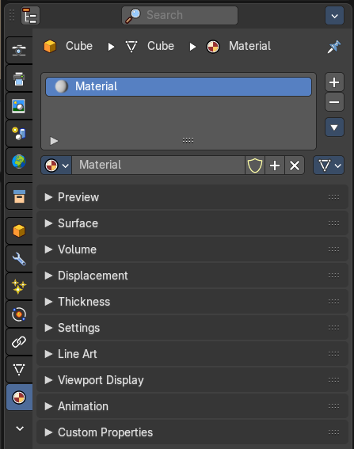
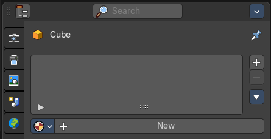
Materials controls the appearance of meshes, curves, volumes and other objects.
A material is the container that contains all the necessary data to define the look of an object. I is made of a code part, the shaders. They control how the surface reacts. And color data like textures. A black and white texture can also control what areas of a shader reacts in what way. Like a gloss map.
Materials can be created in either the Material properties, or in the Shader Editor. The content that is displayed is the same. But the way how it is represented is different.
Materials can be assigned to one or more objects, and different materials can be assigned to different parts of meshes.
The material system is built with physically-based rendering in mind. But can also be used to create toon style materials.
Affected Renderer
The material system is for Eeevee and Cycles. Workbench renderer is meant for fast preview display. It does not use materials like Eevee or Cycles. All you can choose is a color.
Eevee and Cycles have nearly the same nodes available. But some nodes differs. Eevee is a realtime renderer. Cycles is a physically based render. That's two different approaches. So you should take that into account when creating the materials.
Material header
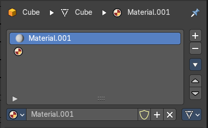
The header area contains the list of materials and the functionality to create new materials and to remove them.
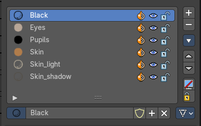
Note that a material for a grease pencil object differs from the rest. It is basically the same. But grease pencil objects have other icons in the material browser.
Material List
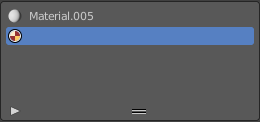
The list of assigned materials to this object. The list shows the material slots. A material slot that has the red material icon assigned has no material content yet. It is just an empty slot. You have to create it first by clicking at the New button below, in the material property.
Clicking at the name allows renaming of the material.
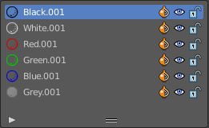
Grease pencil materials have additional functionality in the list.
| Entry | What it does |
|---|---|
| Show in ghosts | Turn on onion skinning for this material. Onion skinning displays strokes before and after the current frame. |
| Hide | Show or hide the material. |
| Locked | Protect color from further editing. |
| Drag Handler | The two vertical lines at the end is a handler with which you can expand the list. |
| Search Field | You can expand a search field at the bottom of the list. Type in your term and hit enter to filter for your term. · Sort by Name: Sort the List by name. · Reverse: Exclude the search term instead of searching for it. |
| Entry | What it does |
|---|---|
| Add Material Slot | Add a new material slot |
| Remove Material Slot | Remove the selected material slot. |
Materials Specials menu
With a mesh or curve or other object type
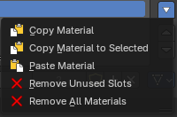
| Entry | What it does |
|---|---|
| Copy Material | Copy the material settings and nodes. |
| Copy Material to selected | Copy material to selected objects. First select the object without material. Hold down shift and select the object with material. Perform Copy material to selected. |
| Paste Material | Pastes a copied material. |
| Remove Unused Slots | Remove material slots that does not contain a material. |
| Remove All Materials | Removes all material slots |
With a grease pencil stroke object
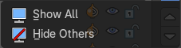
| Entry | What it does |
|---|---|
| Show All | Show all materials. |
| Hide Others | Hide unselected materials. |
Material data property
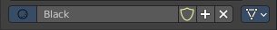
Material Browser
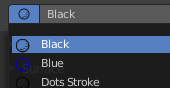
A list of the available materials in the scene where you can choose a material from.
New
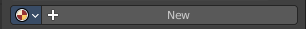
When the object has no material yet. Creates a new default material and adds a first material slot to the list.
| Entry | What it does |
|---|---|
| Name | The name of the active material. Double clicking allows to rename it. |
| Fake User | Keep this data even when it has no user in the scene. |
| New | Creates a new default material, and assigns it to the active material slot. |
| Remove | — |
Link
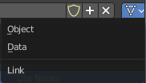
Specifies whether the material is to be linked to the Object or to the Object Data.
Different objects may share the same mesh data. And if the material is linked to the mesh, every object will share it. If the material is linked directly to the object data, the objects can have different materials and still share the same mesh. Default is Data.
Right Click menus
When you right click at the material property then you will reveal context menus with different content, dependant of where you click. Most of the content is explained in chapter 6, the general right click menu functionality. The rest should be self explaining.
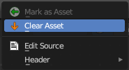
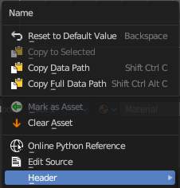
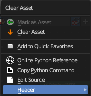
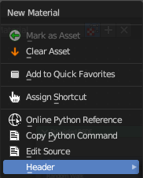
Edit Mode
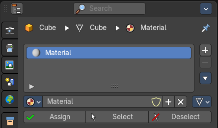
In Edit mode you can assign different materials at different mesh or curve parts.
| Entry | What it does |
|---|---|
| Workflow | Enter Edit Mode. Select the material that you want to assign. Select the mesh or curve part. Click at the assign button. |
| Assign | Assign active material slot and material to the selected faces in the mesh, strokes in a Grease Pencil, and similar for other object types. |
| Select | Select faces assigned to the active material slot. |
| Deselect | Deselect faces assigned to the active material slot. |
Preview Panel
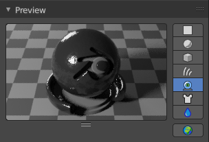
A preview window to judge the material.
| Entry | What it does |
|---|---|
| Flat, Sphere, Cube, etc. | Different shaped preview objects. |
| Preview World | Include the world settings into the preview rendering. |
Surface Panel
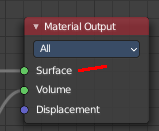
This panel displays the Surface part of the material as a list. And allows you to edit its values.
Use Nodes
Choose if you want to use nodes or not. Unticked it will use a default material with just basic values. Ticked it will use the material as defined in the shader editor in the Shading workspace. And display its values.
The values with unticked Use Nodes will not appear in the material node editor.
Use Nodes unticked with Eevee
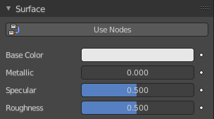
Gives you the values for a very basic PBR realtime shader.
Use Nodes unticked with Cycles
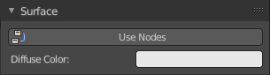
Gives you a base color.
Use Nodes ticked
Displays the content of the material in the shader editor as a list.
Triangle buttons indicates that there is a node connected to this input. You can expand this triangle to access the values of the connected node.
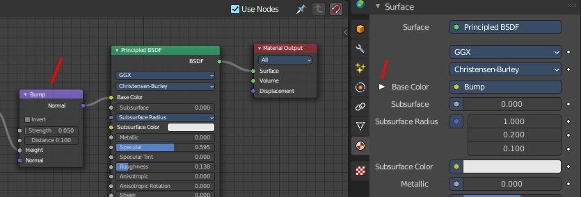
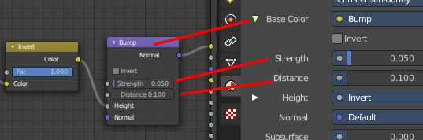
For the nodes and the values please have a look in the shader editor.
Surface Panel - Grease Pencil Object
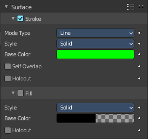
The content of the surface panel with a grease pencil object is a bit different from other object types since Grease pencil objects uses materials for the drawing color.
Presets
The presets in the header allows you to use and store presets.
Stroke Subpanel
Stroke related settings.
Mode Type
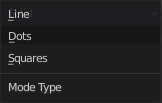
The draw mode for the stroke. The modes should be self explaining. Most settings are the same in all modes.
Mode Type Line
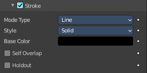
Style
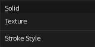
The draw style.
Solid
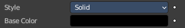
Base Color
The color of the stroke.
Texture
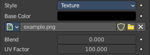
Base Color
The base color of the stroke. You can blend the texture with this color.
Image Prop
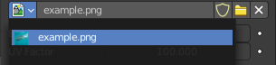
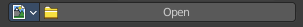
This property contains the list of loaded images. When no image is loaded then it displays the Open Buttons. When an image exists then it displays the name of the currently selected image.
From left to right ...
| Entry | What it does |
|---|---|
| Image browser | This is a list of the images in the scene. This list allows you to switch to other images. |
| Search form | Search for specific images. |
| Image Edit Box | Read the name of the currently selected image. And you can rename the image here too. |
| Number of Fake Users | In case this file has a fake user assigned, then this number displays the number of fake users. |
| Fake User | Wit this button you assign a fake user to this selected image. Data, like images, that is not longer linked to anything else gets removed when you save and reload a scene. Bforartists has the concept of fake users to go around this behavior. An image with a fake user is in fact linked to something. And so it is not lost when you save and reload the scene. |
| Open | Open a new image. |
| Remove | Removes the image. |
| Entry | What it does |
|---|---|
| Self Overlap | Disable stencil and allow self intersections with alpha materials. |
| Holdout | Remove the color from underneath this stroke by using the stroke as a mask. |
Mode Type Dots + Squares
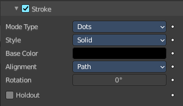
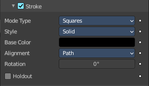
Style
The draw style.
Solid
Base Color
The color of the stroke.
Texture
Base Color
The base color of the stroke. You can blend the texture with this color.
Image Prop
This property contains the list of loaded images. When no image is loaded then it displays the Open Buttons. When an image exists then it displays the name of the currently selected image.
From left to right ...
| Entry | What it does |
|---|---|
| Image browser | This is a list of the images in the scene. This list allows you to switch to other images. |
| Search form | Search for specific images. |
| Image Edit Box | Read the name of the currently selected image. And you can rename the image here too. |
| Number of Fake Users | In case this file has a fake user assigned, then this number displays the number of fake users. |
| Fake User | Wit this button you assign a fake user to this selected image. Data, like images, that is not longer linked to anything else gets removed when you save and reload a scene. Bforartists has the concept of fake users to go around this behavior. An image with a fake user is in fact linked to something. And so it is not lost when you save and reload the scene. |
| Open | Open a new image. |
| Remove | Removes the image. |
Alignment
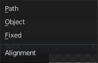
Dots and Squares mode.
| Entry | What it does |
|---|---|
| Path | Alignment follows stroke drawing path and object rotation. |
| Object | Alignment follows object rotation only. |
| Fixed | Keeps aligned with viewport. |
Self Overlap
Disable stencil and allow self intersections with alpha materials.
Rotation
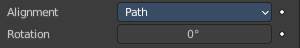
Additional rotation applied to dot and square strokes.
Holdout
Remove the color from underneath this stroke by using the stroke as a mask.
Fill Subpanel
Fill color related settings.
Style
Solid
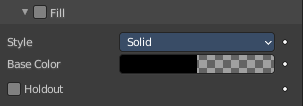
Base Color
The color of the stroke.
Holdout
Remove the color from underneath this stroke by using the stroke as a mask.
Gradient
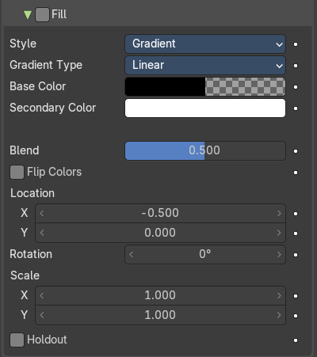
Gradient Type
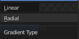
Draw a linear or a radial gradient.
| Entry | What it does |
|---|---|
| Base Color | The first color of the gradient. |
| Secondary Color | The second color of the gradient. |
| Blend | The mix factor between the first and second gradient color. |
| Flip Colors | Flip the filling colors. |
| Location X / Y | The location of the gradient. |
| Rotation | The rotation of the gradient. |
| Scale X / Y | The scale of the gradient. |
Holdout
Remove the color from underneath this stroke by using the stroke as a mask.
Texture
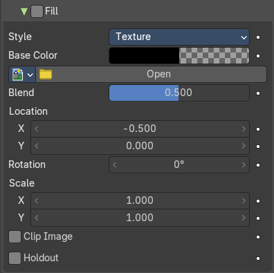
Base Color
The base color of the stroke. You can blend the texture with this color.
Image Prop
This property contains the list of loaded images. When no image is loaded then it displays the Open Buttons. When an image exists then it displays the name of the currently selected image.
From left to right ...
| Entry | What it does |
|---|---|
| Image browser | This is a list of the images in the scene. This list allows you to switch to other images. · Search form: Search for specific images. |
| Image Edit Box | Read the name of the currently selected image. And you can rename the image here too. |
| Number of Fake Users | In case this file has a fake user assigned, then this number displays the number of fake users. |
| Fake User | Wit this button you assign a fake user to this selected image. Data, like images, that is not longer linked to anything else gets removed when you save and reload a scene. Bforartists has the concept of fake users to go around this behavior. An image with a fake user is in fact linked to something. And so it is not lost when you save and reload the scene. |
| Open | Open a new image. |
| Remove | Removes the image. |
| Location X / Y | The location of the image. |
| Rotation | The rotation of the image. |
| Scale X / Y | The scale of the image. |
| Clip Image | Do not repeat the image, but clamp it to one instance. |
| Holdout | Remove the color from underneath this stroke by using the stroke as a mask. |
Volume Panel
This panel displays the Volume part of the material as a list. And allows you to edit its values.
Use Nodes
Choose if you want to use a volume node or not.
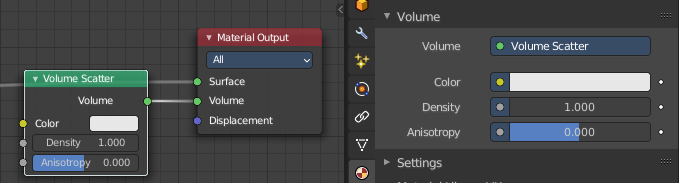
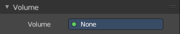
Removing the volume node in the shader editor will clear the volume panel.
Displacement Panel
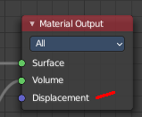
This panel displays the Displacement part of the material as a list. And allows you to edit its values.
Use Nodes
Choose if you want to use a displacement node or not.
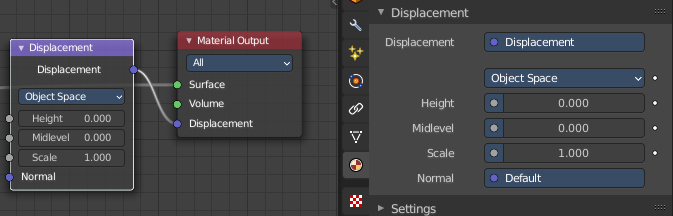
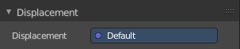
Removing the displacement node in the shader editor will clear the panel.
Thicknes Panel
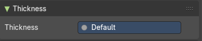
This shader panel displays whatever you plug in into the Thickness input of the Material Output node.
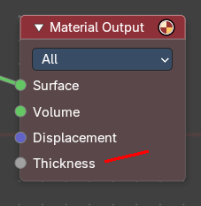
Settings Panel - Eevee renderer
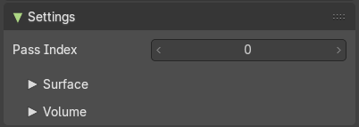
Pass Index
Index number for the material index pass.
Surface subpanel
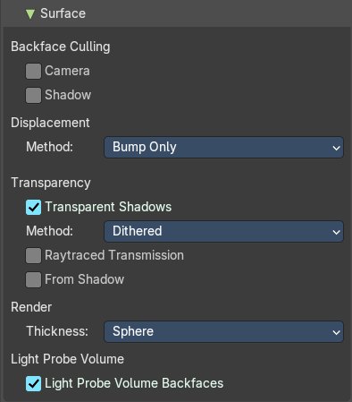
Backface Culling
| Entry | What it does |
|---|---|
| Camera | Use back face culling to hide the back side of faces. |
| Shadow | Use back face culling when casting shadows. |
Displacement
The maximum distance that a vertex can be displaced. Displacement over this threshold may cause visibility issues.
Method
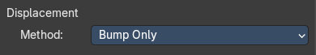
Bump only
Bump mapping simulates the displacement mapping.
Displacement only
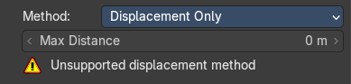
Use true displacement. Requires fine subdivision.
Max distance
The maximum distance the vertices can be displaced.
Displacement and Bump
Uses a mixture of displacement and bump mapping.
Max distance
The maximum distance the vertices can be displaced.
Transparency
Transparent Shadows
Use transparent shadows for this material.
Method
Controls the blending and the compatibility with certain features.
Dithered
Allows for grayscale hashed transparency, and is compatible with render passes and raytracing. This is also known als deferred rendering.
Raytraced refraction
Use raytracing to determine refracted color instead of using only light probes. This prevents the surface from contributing to the lighting of surfaces not using this setting.
From Shadow
Use the shadow map from shadow casting lights to refine the thickness defined by the material node tree.
Blended
Allows for colored transparency, but is incompatible with render passes and raytracing. This is also known als forward rendering.
Transparency Overlap
Render multiple transparent layers. Note that this may introduce transparency sorting problems.
Render
Thickness
The thickness model to consider geometry to be inside the object.
Light Probe Volume
Light Probe Volume Backfaces
Consider materials single sided for light probe volume capture.
Volume subpanel
Intersection
| Entry | What it does |
|---|---|
| Fast | Each face is considered as a medium interface. It gives correct results for manifold geometry that contains no inner parts. |
| Accurate | Faces are considered as a medium interface only when they have different consectuive facing. It gives correct results as longa s the max ray depth is not exceeded. This method also has a significant higher memory requirement. |
Settings Panel - Cycles renderer
Material settings.
Pass Index
The index number of this material. This material index can be used for masking in post processing for example.
Surface subpanel
Surface related settings.
Displacement
What method to use for displacement.
Emission Sampling
Sampling strategy for emission surfaces.
| Entry | What it does |
|---|---|
| Transparent Shadows | Use transparent shadows if the material contains a transparent bsdf node. |
| Bump map correction | Correwct shadow terminator artifacts caused by bump mapping. |
Volume subpanel
Sampling
What sampling method to use for volume rendering.
Interpolation
What interpolation method to use for volume rendering.
Line Art
Material Mask
Use material masks to filter out occluded strokes. You can filter out up to eight mask bits. The index starts with 0.
| Entry | What it does |
|---|---|
| Levels | Faces with this material will behave as if it has set nubmers of layers in occlusion. |
| Intersection Priority | Overwrite object and collection priority value. · Intersection Priority Value: The intersection line will be included into the object with the higher intersection priority value. |
Viewport Display
Display settings for viewport display mode Solid. The items should be self explaining.
In solid mode the material colors are not displayed. With the viewport display color you can change this, and give each material its own color. Which can be any color, not necessarily the color from the material. Each material can have its own viewport display color.
Note that the Workbench renderer does not use materials and its colors at all. It relies completely at the viewport display color, even for rendering. But you can also here use different materials to have different colors at the mesh.
Settings Subpanel
Cycles only. And with Cycles these settings are just relevant for the viewport rendering in Material Preview mode. That's why they are in the viewport display panel.
Backface Culling
| Entry | What it does |
|---|---|
| Camera | Use back face culling to hide the back side of faces. |
| Shadow | Use back face culling when casting shadows. |
Displacement
The maximum distance that a vertex can be displaced. Displacement over this threshold may cause visibility issues.
Method
Bump only
Bump mapping simulates the displacement mapping.
Displacement only
Use true displacement. Requires fine subdivision.
Max distance
The maximum distance the vertices can be displaced.
Displacement and Bump
Uses a mixture of displacement and bump mapping.
Max distance
The maximum distance the vertices can be displaced.
Transparency
Transparent Shadows
Use transparent shadows for this material.
Method
Controls the blending and the compatibility with certain features.
Dithered
Allows for grayscale hashed transparency, and is compatible with render passes and raytracing. This is also known als deferred rendering.
Raytraced refraction
Use raytracing to determine refracted color instead of using only light probes. This prevents the surface from contributing to the lighting of surfaces not using this setting.
From Shadow
Use the shadow map from shadow casting lights to refine the thickness defined by the material node tree.
Blended
Allows for colored transparency, but is incompatible with render passes and raytracing. This is also known als forward rendering.
Transparency Overlap
Render multiple transparent layers. Note that this may introduce transparency sorting problems.
Render
Thickness
The thickness model to consider geometry to be inside the object.
Light Probe Volume
Light Probe Volume Backfaces
Consider materials single sided for light probe volume capture.
Volume Intersection
The volume intersection method.
Custom Properties panel
This panel exists for all object types in the Object Data Properties. Allows you to add custom properties that can be used in various ways then. For scripting, or to drive animation etc.
In this panel you might also find custom properties from addons or scripts.
| Entry | What it does |
|---|---|
| Add | Adds a new property. |
| Property Value | The value of the property. |
Edit
Opens a panel where you can adjust the settings for the custom property. The settings should be self explaining.
Remove
Removes the property.